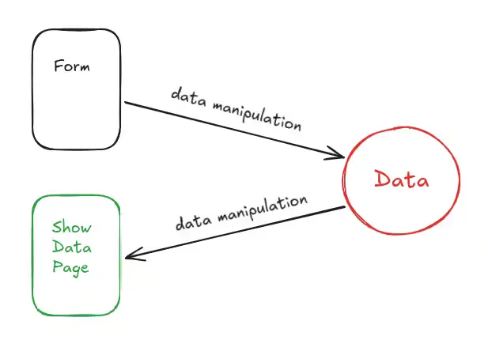

Who needs package managers, build tools, and YAML files?
Just copy-pasted the code I needed and deployed directly from the main branch:
https://github.com/AlessandroTambellini/3d-matrix-visualizer.
Consequences?
It saves a lot of developer's time (at least mine)
The codebase is cleaner
The website is easily debuggable from the DevTools: no hashing of filenames, bundles and minifications.
And no, the website isn't slower because the problem isn't my little scripts of hundreds of lines of code.
See the difference with the previous approach:
https://github.com/AlessandroTambellini/matrix-visualizer.
position: sticky; isn't just about making a good visual effect for a navbar.
It allows to save on containers, allowing the HTML to be more semantic.
In this specific case the goal is to scroll the posts while manteining the title visible.
Thanks to sticky I can do it without relying on a container with scrolling properties.
The Overrides feature of the 'Sources' tab of the DevTools drove me crazy.
Today I took a look at Facebook: the DevTools was lagging so much I wasn't even able to navigate the source code.
Btw, the nested <div>s test is passed: 11 divs to reach a button on the front page.
:
Today I took a look at Claude.ai and just this little code snippet generated in the chat is more than 6KB of HTML.
Moreover, it has 17 opening <span> tags but 27 closing </span> tags. Go figure.
And of course, I had the same laggish experience as with the Facebook code.
Sometimes I like to right click web pages to take a look at the source code.
In most cases it's a miserable blob of nested <div>s without any sense.
I remember one month ago taking a look at the Porsche website made in Next.js and,
immediately after, watching the 2025 Vercel Conference (The company behind Next.js)
where they basically said:
"Well, crawlers and agents are not able to scan our websites and so we thought about creating the text-based representation
of the content of a page in parallel to the page itself, specific for the crawlers"...
Instead of questioning their JS blob on the frontend, they come up with this solution.
Are they really that blind or is it just a question of interests? Or am I just naive?
Now, my follow-up question is,
is it possible for a complex website to be semantic?
And perhaps without uploading and downloading gigabytes of JS blob?
And perhaps without all the crazy, high-end, ultra-powerfull, magic, astonishing frameworks and libraries?
This is my modest try:
https://github.com/AlessandroTambellini/Post-Stream.
Also, a website, more precisely a website of the Web 2.0, performs 4 main actions:
Get user data via a form
Manipulate the data for storage/retrival
Store/Retrieve the data into/from a database
Show the data

If these actions are performed by using what the web offers (URL, HTTP, HTML),
it's pretty straightforward to implement such a system.
But, to make a bit easier to control some UI state,
some people decided to adopt a model called Single Page Application.
A model where the easiness of manipulating data by exploiting the change of page is lost
at the cost of what I already said before.
Just to make an example, this is the readability and easiness of analysis of a page of my project in the browser:
Matthew Prince, CEO of Cloudflare,
talks about AI bots and publishers.
Some of the points he makes are:
AI bots consequences for publishers:
Subs aren't sold
Ads aren't seen
People don't visit the publisher page -> no ego/fame
People create content to:
Make money
Get fame
And here are my considerations:
The more a page has "fame", the more it's crawled by the bots.
The more a page is linked and cited, the more it's crawled by the bots.
The more a page has fame, the more its content has a chance to be in an LLM answer.
And I think sharing the message/opinion/point-of-view
is more important than fame per se.
"Ads aren't seen" and "Subs aren't sold" are the same problem: money.
So, given I don't see the ego/fame point as a problem, everything comes down to the money aspect.
And so, what's the consequence? That you don't earn by writing on the web ⇒
no clickbait, no ads, free content, more independent publishers and less corporate publishers.
Read A Programmable Web: An Unfinished Work, by Aaron Swartz.
It makes a bunch of interesting points related to: openess of data, API design, structure of URLs,
Digest access authentication built-in HTTP, stateless web, robots & crawlers.
Revisited and reshaped a little article about the NAND gate that I wrote 3 years ago:
Just a NAND gate
Today I read
Idiosyncrasies of the HTML parser.
To be precise, I read the first two chapters and skimmed the third one.
What I understood is that the HTML parser of browsers is built to handle any type of
"writing style" plus, without ever throwing an error. In the style of:
"Hey, don't worry, however you write it's fine and we are never gonna throw you an error!".
It remembers me of an interview to Brendan Eich where he says that from the first draft
of JS the equality operator == was the strict equality one but then, people persuaded
him to make it loosely equal.
Were these decisions made to let people populate the web in the easiest way possible without
worrying about the programming barrier?
I can draw a parallel with the decision of YouTube to remove the dislike button at the cost
of lowering the quality of the content "to let people express fearlessly".
Translated: to populate YouTube.